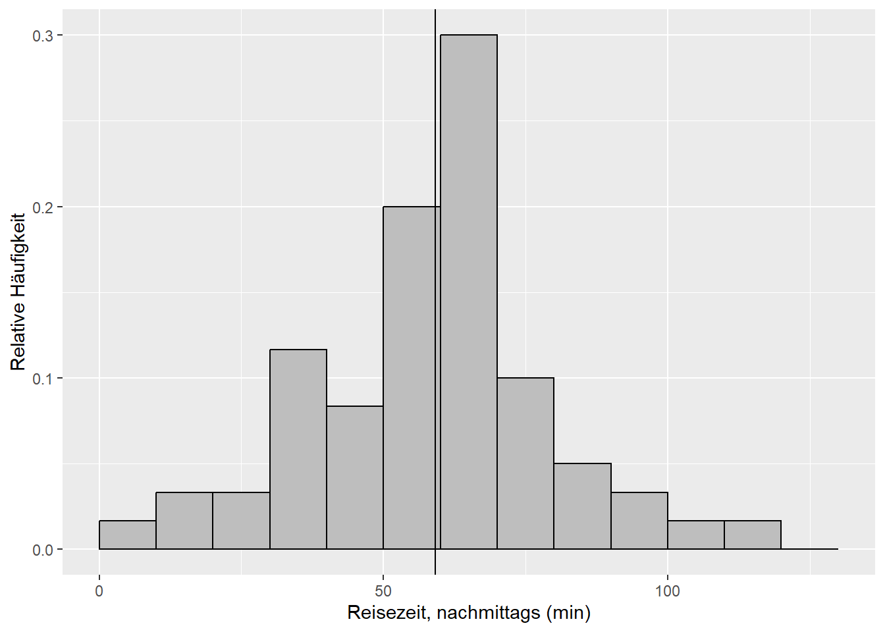
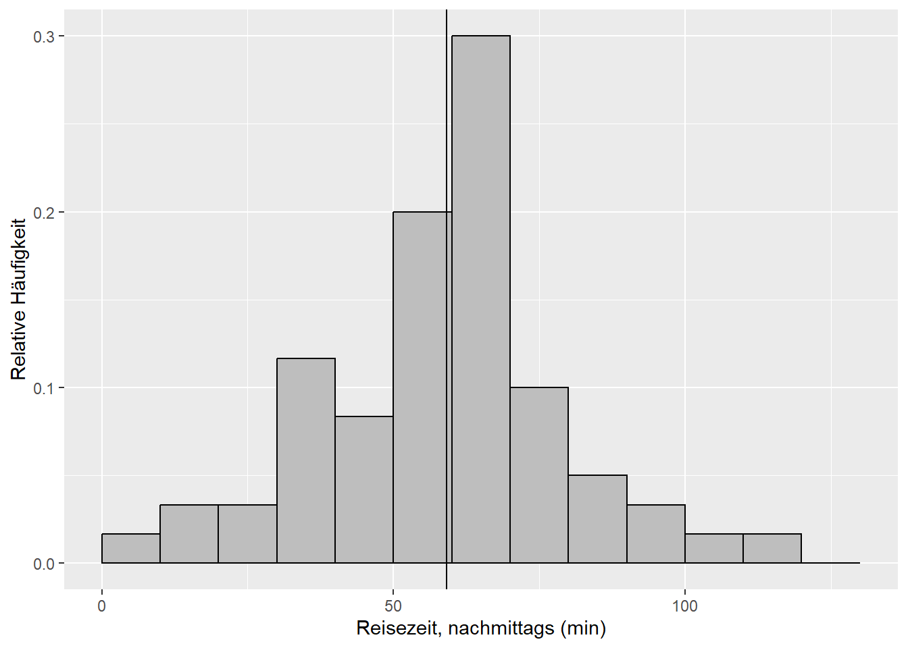
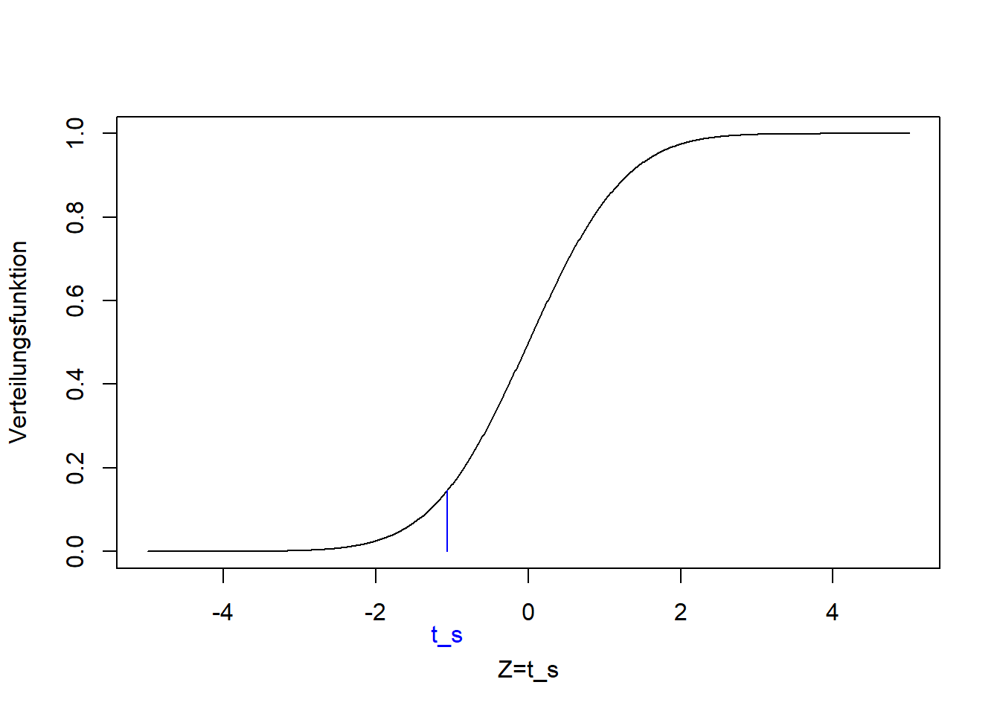

Kapitel 9 Statistische Tests
Wie wir in Kapitel 8 gelernt haben geht es in der schließenden Statistik um die Verdichtung der Informationen in einer Stichprobe in Form von Stichprobenfunktionen, mit denen wir bestimmte Parameter der Grundgesamtheit schätzen (vgl. Mittag (2016), Abb. 14.1, S. 212). Während es sich im Fall von Verteilungsparametern bei den Stichprobenfunktionen v.a. um den Mittelwert und die Standardabweichung handelt, sind die Stichprobenfunktionen im Fall von statistischen Tests sogenannte Teststatistiken, die die Informationen in der Stichprobe verdichten.
Wir werden das vorliegende Kapitel über die nächsten drei Wochen lesen. Dabei werden wir anhand der folgenden neun Beispiele vier verschiedene Tests kennenlernen:
- Beispiel 1: Laut dieser Umfrage hält jede zweite Berufspendler:in eine durchschnittliche Fahrtzeit von bis zu 60 min pro Strecke für akzeptabel. Anhand Ihrer Reisezeitdaten (morgens, Abbildung 9.1) wollen wir fragen: Ist der mit dem Stichprobenmittel \(\bar x=\) 52.3 geschätzte Mittelwert \(\mu\) der Grundgesamtheit kleiner als der Vergleichswert \(\mu_0=60\) aus der Studie? Beziehungsweise, ist der Unterschied statistisch signifikant, wenn wir die Streuung der Stichprobe berücksichtigen?9 Die Frage “kleiner als”, wenn es um einen Mittelwert geht, beantwortet der sogenannte linksseitige Einstichproben-t-Test (Kapitel 9.2.1).

Abbildung 9.1: Histogramm des Merkmals “Reisezeit, morgens” der Reisedaten aus dem Wintersemester 2023/24. Die vertikale Linie markiert den Mittelwert.
- Beispiel 2: Ist der mit dem Stichprobenmittel \(\bar x=\) 52.3 geschätzte Mittelwert \(\mu\) der Grundgesamtheit ungleich dem Vergleichswert \(\mu_0=60\) aus der Studie? Wenn wir die Frage so formulieren brauchen wir einen sogenannten zweiseitigen Einstichproben-t-Test (Kapitel 9.2.1).
- Beispiel 3: Laut derselben Umfrage nehmen 21% der Pendler:innen eine Fahrtzeit zwischen 30 und 45 min in Kauf. Ist der mit dem Stichprobenmittel \(\bar x=\) 52.3 geschätzte Mittelwert \(\mu\) der Grundgesamtheit größer als der Vergleichswert \(\mu_0=45\) aus der Studie? Beziehungsweise, ist der Unterschied statistisch signifikant, wenn wir die Streuung der Stichprobe berücksichtigen? Die Frage “größer als” beantwortet der rechtsseitige Einstichproben-t-Test (Kapitel 9.2.1).10
- Beispiel 4: Jetzt vergleichen wir die Reisezeiten morgens und nachmittags (Abbildung 9.2). Sind die mit den Stichprobenmitteln \(\bar x_1=\) 52.3 und \(\bar x_2=\) 55.9 geschätzten Mittelwerte \(\mu_1\) und \(\mu_2\) ungleich? Diese Frage beantwortet der sogenannte Zweistichproben-t-Test (zweiseitig) (Kapitel 9.2.2).11
 

Abbildung 9.2: Histogramme der Merkmale “Reisezeit, morgens” und “Reisezeit, nachmittags” der Reisedaten aus dem Wintersemester 2023/24. Die vertikalen Linien markieren die jeweiligen Mittelwerte
- Beispiel 5 (Dormann 2013): Auf den Nord- und Südseiten einer Stichprobe von Bäumen wurde jeweils die Anzahl Moosarten bestimmt (Abbildung 9.3). Ist die Anzahl Moosarten auf der Nord- und Südseite derselben Bäume unterschiedlich? Dafür brauchen wir den gepaarten Zweistichproben-t-Test (zweiseitig) (Kapitel 9.2.4).

Abbildung 9.3: Verteilung der Anzahl Moosarten auf der Südseite (links) und Nordseite (rechts) derselben Bäume. Daten aus: Dormann (2013).
- Beispiel 6: Zurück zu den beiden Reisezeiten aus Beispiel 4 (Abbildung 9.2). Ist die Varianz \(\sigma_2^2\) (gegeben \(s_2^2=\) 456) größer als die Varianz \(\sigma_1^2\) (gegeben \(s_1^2=\) 444)? Diese Frage beantwortet der sogenannte F-Test (rechtsseitig) (Kapitel 9.4).
- Beispiel 7: Entstammt die Stichprobe der Reisezeit morgens (Abbildung 9.1) einer normalverteilten Grundgesamtheit? Die Parameter dieser Normalverteilung werden anhand der Stichprobe geschätzt. Diese Frage beantwortet der sogenannte Einstichproben-Kolmogorow-Smirnow-Test (Kapitel 9.5).
- Beispiel 8: Folgen die beiden Reisezeiten (Abbildung 9.2) der selben Verteilung? Dafür brauchen wir den Zweistichproben-Kolmogorow-Smirnow-Test (Kapitel 9.5).
- Beispiel 9: Zurück zum Volksentscheid Tegel aus Kapitel 5. Gibt es einen Zusammenhang zwischen “Bezirk” und “Votum” beim Volksentscheid Tegel? Beziehungsweise, ist der geringe Zusammenhang, den wir bereits festgestellt haben, statistisch signifikant? Diese Frage beantwortet der sogenannte Chi-Quadrat-Test (Kapitel 9.6).
9.1 Grundprinzipien statistischer Tests
Die folgenden Prinzipien liegen allen statistischen Tests zugrunde, wobei wir vieles am Beispiel des t-Tests demonstrieren, der dann in Kapitel 9.2 vollständig behandelt wird.
9.1.1 Nullhypothese und Alternativhypothese
Das Formulieren von Hypothesen ist die klassische formale Vorgehensweise, Fragestellungen wie die oben genannten Beispiele statistisch zu übersetzen.
Bsp. 3: Ist \(\mu\) (gegeben \(\bar x=\)) 52.3 größer als \(\mu_0=45\)?
Jeder statistische Test verlangt eine bestimmte Nullhypothese \(H_0\).
Bsp. 3: \(H_0: \mu\leq\mu_0\)
Diese wird getestet.
Die Alternativhypothese \(H_1\) ist aber die, die sich zunächst aus den Zahlenwerten ergibt.
Bsp. 3: \(H_1: \mu>\mu_0\)
Hypothesen können nur abgelehnt (falsifiziert) werden. Das Annehmen von Hypothesen gilt nur bis auf weiteres.
9.1.2 Zweiseitig und einseitig
Wir unterscheiden zweiseitige und einseitige Tests. Bei zweiseitigen Tests wird auf ungleich/gleich getestet.
Bsp. 2: Ist \(\mu\) (gegeben \(\bar x=\)) 52.3 ungleich \(\mu_0=60\)?
Bei einseitigen Tests wird auf kleiner/nicht kleiner oder größer/nicht größer getestet.
Bsp. 1: Ist \(\mu\) (gegeben \(\bar x=\)) 52.3 kleiner als \(\mu_0=60\)?
Ein einseitiger Test ist in der Regel aussagekräftiger. Die Ergebnisse beider Tests lassen sich aber einfach ineinander überführen - wie wir noch sehen werden.
9.1.3 Die Teststatistik
Jeder Test hat eine bestimmte Teststatistik (Prüfwert) von der wir wissen, wie sie bei wiederholtem Stichprobenziehen verteilt ist (unter bestimmten Annahmen), falls die Nullhypothese wahr ist.12 Die Teststatistik eines Einstichproben-t-Tests beispielsweise ist: \[\begin{equation} t_s=\frac{\hat\mu-\mu_0}{s_{\hat\mu}}\sim t_{n-1} \tag{9.1} \end{equation}\]
\(\hat\mu\) ist der Mittelwertschätzer; in Bsp. 1 \(\hat\mu=\bar x=\) 52.3. \(\mu_0\) ist der Wert, mit dem wir den Schätzer vergleichen; in Bsp. 1 \(\mu_0=60\). \(s_{\hat\mu}\) ist der Standardfehler des Mittelwertschätzers (vgl. Kapitel 8). Ist die Grundgesamtheit normalverteilt mit \(\mu=\mu_0\), dann ist der so standardisierte Schätzer des Mittelwertes (die Teststatistik \(t_s\)) bei wiederholtem Stichprobenziehen t-verteilt mit \(n-1\) Freiheitsgraden (vgl. Kapitel 8).13
9.1.4 Was genau getestet wird
Wenn die Teststatistik nahe dem Zentrum der Verteilung ist, die unter der Nullhypothese zu erwarten ist, d.h. in einem Bereich hoher Wahrscheinlichkeit, dann lehnen wir die Nullhypothese nicht ab. In Abbildung 9.4 ist das für die Teststatistik \(t_s\) in blau und die t-Verteilung dargestellt. Im Bsp. 2 würden wir in so einem Fall bis auf weiteres schließen, dass \(\mu\) (gegeben \(\bar x=\) 52.3) gleich \(\mu_0=60\) ist.
Ist die Teststatistik dagegen in den Extremen der Verteilung, d.h. in einem Bereich geringer Wahrscheinlichkeit, dann lehnen wir die Nullhypothese ab. In Abbildung 9.4 ist das mit den roten Pfeilen verdeutlicht. Im Bsp. 2 würden wir in so einem Fall schließen, dass \(\mu\) (gegeben \(\bar x=\) 52.3) ungleich \(\mu_0=60\) ist. Das ist in dem Beispiel tatsächlich das Ergebnis - wie wir noch sehen werden.
![Grundprinzip des statistischen Testens, hier dargestellt für einen konstruierten t-Test: Verteilungsfunktion der t-Verteilung mit 97 Freiheitsgraden, mit Teststatistik $t_s$ (blau) im Zentrum der Verteilung, d.h. im Bereich hoher Wahrscheinlichkeit unter der Nullhypothese. Wir lehnen die Nullhypothese _nicht_ ab. Wäre die Teststatistik dagegen in den Extremen der Verteilung (mit roten Pfeilen verdeutlicht), wäre sie im Bereich geringer Wahrscheinlichkeit unter der Nullhypothese. In dem Fall lehnen wir die Nulhypothese ab.](eids_files/figure-html/testprinzip-1.png)
Abbildung 9.4: Grundprinzip des statistischen Testens, hier dargestellt für einen konstruierten t-Test: Verteilungsfunktion der t-Verteilung mit 97 Freiheitsgraden, mit Teststatistik \(t_s\) (blau) im Zentrum der Verteilung, d.h. im Bereich hoher Wahrscheinlichkeit unter der Nullhypothese. Wir lehnen die Nullhypothese nicht ab. Wäre die Teststatistik dagegen in den Extremen der Verteilung (mit roten Pfeilen verdeutlicht), wäre sie im Bereich geringer Wahrscheinlichkeit unter der Nullhypothese. In dem Fall lehnen wir die Nulhypothese ab.
Beachte: Bei der zweiseitigen Version des Tests schauen wir auf beiden Seiten der Verteilung (beide Extreme), während wir bei dem linksseitigen Test nur auf die linke und bei dem rechtsseitigen Test nur auf die rechte Seite schauen.
9.2 t-Test (Vergleich von Mittelwerten)
Jetzt haben wir schon viel über den t-Test gehört. Er ist dazu da, Mittelwerte zu vergleichen. Wenn wir den Mittelwert einer Stichprobe gegen einen Vergleichswert testen dann ist das der Einstichproben-t-Test. Wenn wir die Mittelwerte zweier Stichproben vergleichen dann ist das der Zweistichproben-t-Test. Wenn die beiden Stichproben gepaart sind, d.h. wenn die Merkmalswerte jeweils für die selbe statistische Einheit erhoben wurden, dann spricht man vom gepaarten Zweistichproben-t-Test. Die Teststatistik ist in allen diesen Fällen ähnlich. Schauen wir uns nun die Varianten des t-Tests anhand der Beispiele an.
9.2.1 Einstichproben-t-Test
9.2.1.1 Beispiel 1 (linksseitiger Einstichproben-t-Test)
Siehe Abbildung 9.1:
Ist der mit dem Stichprobenmittel \(\bar x=\) 52.3 geschätzte Mittelwert \(\mu\) der Grundgesamtheit kleiner als der Vergleichswert \(\mu_0=60\)? Beziehungsweise, ist der Unterschied statistisch signifikant, wenn wir die Streuung der Stichprobe berücksichtigen?
Die Nullhypothese ist in diesem Fall, dass der Mittelwert größer oder gleich dem Vergleichswert ist: \[H_0:\mu\geq\mu_0\] Die Alternativhypothese ist, dass der Mittelwert kleiner als der Vergleichswert ist: \[H_1:\mu<\mu_0\]
Die Alternativhypothese ergibt sich wie gesagt aus den Zahlenwerten der Stichprobe, deren Mittelwert tatsächlich kleiner is als \(\mu_0=60\). Wir hoffen, die Alternativhypothese zu bestätigen indem wir die Nullhypothese ablehnen. Die vorliegende Formulierung der Hypothesen ist der linksseitige Test. Die Teststatistik (Formel (9.1)) rechnen wir anhand der Stichprobe wie folgt aus (vgl. Kapitel 8): \[t_s=\frac{\hat\mu-\mu_0}{s_{\hat\mu}}\sim t_{n-1}\] \[t_s=\frac{\bar x-\mu_0}{s_{\bar x}}\sim t_{n-1}\] \[t_s=\frac{\bar x-\mu_0}{s}\cdot\sqrt{n}\sim t_{n-1}\]
Setzen wir die Zahlenwerte aus der Stichprobe ein (“reisedat$zeit_morgens” enthält die Merkmalswerte für “Reisezeit, morgens” aus dem Wintersemester 2023/24):
# Mittelwert
# na.rm=TRUE ignoriert NAs
xbar <- mean(reisedat$zeit_morgens, na.rm=TRUE)
xbar## [1] 52.28# Vergleichswert
mu0 <- 60
# Standardabweichung
# na.rm=TRUE ignoriert NAs
s <- sd(reisedat$zeit_morgens, na.rm=TRUE)
s## [1] 21.06# Stichprobenumfang
# !is.na(reisedat$zeit_morgens) verweist auf die Werte, die nicht NA sind
n <- length(reisedat$zeit_morgens[!is.na(reisedat$zeit_morgens)])
n## [1] 83# Teststatistik
ts <- (xbar - mu0) / s * sqrt(n)
ts## [1] -3.341Dieser Wert der Teststatistik liegt in den Extremen der t-Verteilung, die unter der Nullhypothese zu erwarten ist:
plot(seq(-5,5,0.01), pt(seq(-5,5,0.01), n-1), ylim=c(0,1), type='l',
xlab='Z=t_s', ylab='Verteilungsfunktion')
lines(c(1, 1)*ts, c(0, pt(ts, n-1)), col='blue')
text(ts,-0.2,"t_s", col="blue", xpd=TRUE)Wie extrem der Wert der Teststatistik ist (wie unwahrscheinlich er unter der Nullhypothese ist) misst der sogenannte p-Wert. Der p-Wert ist die Wahrscheinlichkeit, unter Annahme der Nullhypothese, durch Zufall einen extremeren Wert als den der Teststatistik zu erhalten. In Formelsprache: \[\Pr\left(Z<t_s\right)=F_t\left(t_s\right)\]
Die Wahrscheinlichkeit eines kleineren Wertes als den der vorliegenden Teststatistik ist gleich der Verteilungsfunktion der t-Verteilung an der Stelle der Teststatistik (vgl. Kapitel 7).
Mit Zahlenwerten:
pt(ts, n-1)## [1] 0.0006303Der p-Wert ist klein, d.h. es ist unwahrscheinlich, dass dieser Wert der Teststatisk durch Zufall zustande kam falls die Nullhypothese wahr ist. Aber ist er unwahrscheinlich genug, um die Nullhypothese abzulehnen? In der klassischen Statistik entscheiden wir das auf Basis eines sogenannten Signifikanzniveaus, z.B. 0.01: Ist der p-Wert kleiner oder gleich 0.01 lehnen wir die Nullhypothese ab. Ist der p-Wert größer als 0.01 behalten wir die Nullhypothese bis auf weiteres bei. Das Signifikanzniveau von 0.01 ist dabei reine Konvention! Tatsächlich ist die binäre Einteilung andhand des p-Wertes in signifikant/nicht signifikant seit längerem in der Kritik (z.B. Amrhein, Greenland, and McShane (2019)). Und R beispielsweise gibt Signifikanz zu mehreren Niveaus an. Grundsätzlich ist immer der p-Wert anzugeben. Dann kann jede Person ihr eigenes Signifikanzniveau ansetzen.
Für unser Beispiel 1 schließen wir jedenfalls unter diesen Bedingungen:
Der Unterschied zwischen dem mit dem Stichprobenmittel \(\bar x\) geschätzten Mittelwert \(\mu\) der Grundgesamtheit und dem Vergleichswert \(\mu_0=60\) ist statistisch signifikant.
9.2.1.2 Beispiel 2 (zweiseitiger Einstichproben-t-Test)
Wir können die Fragestellung auch schwächer formulieren, als zweiseitiges Testproblem:
Ist der mit dem Stichprobenmittel \(\bar x=\) 52.3 geschätzte Mittelwert \(\mu\) der Grundgesamtheit ungleich dem Vergleichswert \(\mu_0=60\)?
Die Nullhypothese ist in diesem Fall, dass der Mittelwert gleich dem Vergleichswert ist:14 \[H_0:\mu=\mu_0\] Die Alternativhypothese ist, dass die beiden Wert nicht gleich sind: \[H_1:\mu\ne\mu_0\]
Die Teststatistik ist die gleiche wie im linksseitigen Fall, nur dass wir jetzt auf beide Extreme der t-Verteilung schauen, die unter der Nullhypothese zu erwarten ist:
plot(seq(-5,5,0.01), pt(seq(-5,5,0.01), n-1), ylim=c(0,1), type='l',
xlab='Z=t_s', ylab='Verteilungsfunktion')
lines(c(1, 1)*ts, c(0, pt(ts, n-1)), col='blue')
lines(c(1, 1)*(-ts), c(0, pt(-ts, n-1)), col='blue')
text(ts,-0.2,"t_s", col="blue", xpd=TRUE)
Wir spiegeln also den Wert der Teststatistik an Null, und der p-Wert ist jetzt die Wahrscheinlichkeit eines Wertes der Teststatistik jenseits dieser beiden Grenzen: \[\Pr\left(Z<t_s\right)+\Pr\left(Z>-t_s\right)=2\cdot\Pr\left(Z>\left|t_s\right|\right)=2\cdot \left(1-F_t\left(\left|t_s\right|\right)\right)\]
Die Wahrscheinlichkeit eines extremeren Wertes als den der vorliegenden Teststatistik (auf beiden Seiten) ist zweimal die Wahrscheinlichkeit eines größeren Wertes als der Absolutwert \(\left|t_s\right|\) der vorliegenden Teststatistik - wegen der Symmetrie der t-Verteilung um Null. Die Wahrscheinlichkeit eines größeren Wertes ist Eins minus die Verteilungsfunktion an der entsprechenden Stelle (vgl. Kapitel 7).
Mit Zahlenwerten:
2*(1-pt(abs(ts),n-1))## [1] 0.001261Wie wir sehen ist der p-Wert des zweiseitigen Tests genau zweimal der p-Wert des einseitigen Tests. D.h. wenn der zweiseitige Test signifikant ist, dann ist auch der einseitige Test signifikant. In der Praxis wird oft ein zweiseitiger Test durchgeführt und dann für die einseitige Variante, die sich aus den Zahlenwerten ergibt (hier Bsp. 1), der p-Wert halbiert.
Für Beispiel 2 schließen wir jedenfalls:
Der mit dem Stichprobenmittel \(\bar x\) geschätzte Mittelwert \(\mu\) der Grundgesamtheit ist ungleich dem Vergleichswert \(\mu_0=60\).
Der zweiseitige Test ist wie gesagt ein schwächerer Test als der einseitige, den wir bereits in Bsp. 1 durchgeführt haben. In der Praxis würde man die Tests wie gesagt nicht so hintereinander schalten, sondern umgekehrt.
9.2.1.3 Beispiel 3 (rechtsseitiger Einstichproben-t-Test)
Es fehlt noch der rechtsseitige Test, für den wir eine Fragestellung wie folgt konstruiert haben:
Ist der mit dem Stichprobenmittel \(\bar x=\) 52.3 geschätzte Mittelwert \(\mu\) der Grundgesamtheit größer als der Vergleichswert \(\mu_0=45\)? Beziehungsweise, ist der Unterschied statistisch signifikant, wenn wir die Streuung der Stichprobe berücksichtigen?
Die Nullhypothese ist in diesem Fall, dass der Mittelwert kleiner oder gleich dem Vergleichswert ist: \[H_0:\mu\leq\mu_0\] Die Alternativhypothese ist, dass der Mittelwert größer als der Vergleichswert ist: \[H_1:\mu>\mu_0\]
Wieder ist die Alternativhypothese die, die sich aus den Zahlenwerten der Stichprobe ergibt, deren Mittelwert tatsächlich größer is als \(\mu_0=45\). Die Formel der Teststatistik ist die gleiche wie im links- und zweiseitigen Fall, nur dass wir jetzt gemäß der Fragestellung \(\mu_0=45\) einsetzen:
ts <- (xbar - 45) / s * sqrt(n)
ts## [1] 3.148Der Wert der Teststatistik ist jetzt positiv, da \(\bar x\) größer ist als \(\mu_0\). Er liegt wieder in den Extremen der t-Verteilung, die unter der Nullhypothese zu erwarten ist, nur eben auf der rechten Seite:
plot(seq(-5,5,0.01), pt(seq(-5,5,0.01), n-1), ylim=c(0,1), type='l',
xlab='Z=t_s', ylab='Verteilungsfunktion')
lines(c(1, 1)*ts, c(0, pt(ts, n-1)), col='blue')
text(ts,-0.2,"t_s", col="blue", xpd=TRUE)
Der p-Wert im rechtseitigen Fall ist: \[\Pr\left(Z>t_s\right)=1-F_t\left(t_s\right)\]
Die Wahrscheinlichkeit eines größeren Wertes als den der vorliegenden Teststatistik ist Eins minus die Verteilungsfunktion an der Stelle der Teststatistik (vgl. Kapitel 7).
Mit Zahlenwerten:
1-pt(ts, n-1)## [1] 0.001147Dieser p-Wert ist wieder wesentlich kleiner als das konventionelle Signifikanzniveau von 0.01, d.h. wir lehnen diese Nullhypothese ab und schließen für Beispiel 3:
Der Unterschied zwischen dem mit dem Stichprobenmittel \(\bar x\) geschätzten Mittelwert \(\mu\) der Grundgesamtheit und dem Vergleichswert \(\mu_0=45\) ist statistisch signifikant.
9.2.2 Zweistichproben-t-Test
9.2.2.1 Beispiel 4 (zweiseitiger Zweistichproben-t-Test)
Siehe Abbildung 9.2:
Sind die mit den Stichprobenmitteln \(\bar x_1=\) 52.3 und \(\bar x_2=\) 55.9 geschätzten Mittelwerte der Reisezeiten morgens und nachmittags, \(\mu_1\) und \(\mu_2\), ungleich?
Die Nullhypothese ist in diesem Fall, dass die beiden Mittelwerte gleich sind: \[H_0:\mu_1=\mu_2\] Die Alternativhypothese ist, dass die beiden Werte nicht gleich sind: \[H_1:\mu_1\ne\mu_2\]
Wir vergleichen also jetzt zwei Mittelwerte aus zwei Stichproben und nicht mehr gegen einen Vergleichswert.15 Die Alternativhypothese ergibt sich wiederum aus den Zahlenwerten der Stichproben, deren Mittelwerte tatsächlich ungleich sind. Die Teststatistik ist leicht anders als im einseitigen Fall, da die Differenz der beiden Mittelwerte jetzt mit beiden Standardfehlern standardisiert wird: \[\begin{equation} t_s=\frac{\bar x_1-\bar x_2}{\sqrt{\frac{s_1^2}{n_1}+\frac{s_2^2}{n_2}}}\sim t_{n_1+n_2-2} \tag{9.2} \end{equation}\]
Auch in die Anzahl Freiheitsgrade der t-Verteilung, die unter der Nullhypothese zu erwarten ist, gehen beide Stichprobenumfänge ein. Setzen wir die Zahlenwerte aus den Stichproben ein:
# Mittelwerte
# na.rm=TRUE ignoriert NAs
xbar1 <- mean(reisedat$zeit_morgens, na.rm=TRUE)
xbar1## [1] 52.28xbar2 <- mean(reisedat$zeit_nachmittags, na.rm=TRUE)
xbar2## [1] 55.9# Varianzen
var1 <- var(reisedat$zeit_morgens, na.rm=TRUE)
var1## [1] 443.6var2 <- var(reisedat$zeit_nachmittags, na.rm=TRUE)
var2## [1] 455.6# Stichprobenumfänge
# !is.na() verweist auf die Werte, die nicht NA sind
n1 <- length(reisedat$zeit_morgens[!is.na(reisedat$zeit_morgens)])
n1## [1] 83n2 <- length(reisedat$zeit_nachmittags[!is.na(reisedat$zeit_nachmittags)])
n2## [1] 83# Teststatistik
ts <- (xbar1 - xbar2) / sqrt(var1 / n1 + var2 / n2)
ts## [1] -1.102Dieser Wert der Teststatistik liegt tendenziel im Zentrum der t-Verteilung, die unter der Nullhypothese zu erwarten ist:
plot(seq(-5,5,0.01), pt(seq(-5,5,0.01), n1+n2-2), ylim=c(0,1), type='l',
xlab='Z=t_s', ylab='Verteilungsfunktion')
lines(c(1, 1)*ts, c(0, pt(ts, n1+n2-2)), col='blue')
lines(c(1, 1)*(-ts), c(0, pt(-ts, n1+n2-2)), col='blue')
text(ts,-0.2,"t_s", col="blue", xpd=TRUE)
Der p-Wert ist, analog zum zweiseitigen Einstichproben-t-Test: \[\Pr\left(Z<t_s\right)+\Pr\left(Z>-t_s\right)=2\cdot\Pr\left(Z>\left|t_s\right|\right)=2\cdot \left(1-F_t\left(\left|t_s\right|\right)\right)\]
Mit Zahlenwerten:
2*(1-pt(abs(ts),n1+n2-2))## [1] 0.2722Der einseitige (hier linksseitige) p-Wert wäre: \[\Pr\left(Z<t_s\right)=F_t\left(t_s\right)\]
Mit Zahlenwerten:
pt(ts,n1+n2-2)## [1] 0.1361Also wieder halb so groß wie der zweiseitige p-Wert. Der p-Wert ist größer als das konventionelle Signifikanzniveau von 0.01, d.h. es ist wahrscheinlich, dass dieser Wert der Teststatistik durch Zufall zustande kam falls die Nullhypothese wahr ist, d.h. wir lehnen die Nullhypothese nicht ab.
Für Beispiel 4 schließen wir also:
Der Unterschied der mit den Stichprobenmitteln \(\bar x_1\) und \(\bar x_2\) geschätzten Mittelwerte \(\mu_1\) und \(\mu_2\) ist nicht signifikant. D.h. es besteht kein statistisch signifikanter Unterschied in den Reisezeiten morgens und nachmittags.
9.2.3 Varianten der Teststatistik
Die Teststatistik in Formel (9.2) ist der allgemein gültige Fall, in dem die Varianzen und Umfänge der beiden Stichproben ungleich sein können. Für die Fälle, in denen Varianzen und/oder Stichprobenumfänge gleich sind, vereinfacht sich Formel (9.2) wie folgt.
Bei ungleicher Varianz und gleichem Stichprobenumfang: \[\begin{equation} t_s=\frac{\bar x_1-\bar x_2}{\sqrt{\frac{s_1^2+s_2^2}{n}}}\sim t_{2\cdot n-2} \tag{9.3} \end{equation}\]
Bei gleicher Varianz und gleichem Stichprobenumfang: \[\begin{equation} t_s=\frac{\bar x_1-\bar x_2}{\sqrt{\frac{2\cdot s^2}{n}}}\sim t_{2\cdot n-2} \tag{9.4} \end{equation}\] Wobei der Schätzer der gemeinsamen theoretischen Varianz die sogenannte gewichtete Stichprobenvarianz \(s^2=\frac{\left(n_1-1\right)\cdot s_1^2+\left(n_2-1\right)\cdot s_2^2}{n_1+n_2-2}\) ist.16
Bei gleicher Varianz und ungleichem Stichprobenumfang ist die Teststatistik: \[\begin{equation} t_s=\frac{\bar x_1-\bar x_2}{\sqrt{\left(\frac{1}{n_1}+\frac{1}{n_2}\right)\cdot s^2}}\sim t_{n_1+n_2-2} \tag{9.5} \end{equation}\]
Aufgrund der unterschiedlichen Teststatistiken in Abhängigkeit der Varianzannahme muss dem Zweistichproben-t-Test ein F-Test auf Ungleichheit/Gleichheit der Varianzen vorgeschaltet werden (siehe Bsp. 6).
9.2.4 Gepaarter Zweistichproben-t-Test
Gepaarte Stichproben liegen vor, wenn für die selben statistischen Einheiten zwei Merkmale aufgenommen wurden, die vergleichbar sind, z.B.:
- Die Anzahl Moosarten auf der Süd- und Nordseite der selben Bäume
- Krankheitsmerkmale von Patienten vor und nach der Behandlung
- Behandlung und Kontrolle im selben Block (sogenanntes Blockdesign)
- Und genau genommen Reisezeit der selben Person morgens und nachmittags
Was Blockdesign genau bedeutet können Sie in Dormann (2013), Kapitel 14.2.1 nachlesen. Das wird in der Biogeographie noch eine Rolle spielen.
9.2.4.1 Beispiel 5 (zweiseitiger gepaarter Zweistichproben-t-Test)
Siehe Abbildung 9.3:
Ist die Anzahl Moosarten auf der Nord- und Südseite derselben Bäume unterschiedlich?
In diesem Beispiel liegt eine gepaarte Stichprobe vor, da die Anzahl Moosarten jeweils auf der Nord- und Südseite derselben Bäume bestimmt wurde. Deshalb wird hier getestet, ob die Differenz der Anzahl Moosarten \(d\) gleich oder ungleich Null ist. Die Nullhypothese ist, dass die Differenz gleich Null ist: \[H_0:d=0\] Die Alternativhypothese ist, dass die Differenz ungleich Null ist: \[H_1:d\ne0\]
Wir bilden die Differenz einfach, indem wir die Merkmalswerte paarweise subtrahieren (“moosdat” enthält die Originaldaten):
moosdat$d <- moosdat$n - moosdat$s
# Histogramm mit Mittelwert
ggplot(moosdat, aes(x=d)) +
geom_histogram(aes(y=after_stat(count/sum(count))), breaks=seq(-16, 16, 4), colour="black", fill="grey") +
geom_vline(xintercept=mean(moosdat$d)) +
ylim(0,0.6) +
xlab("Differenz Anzahl Moosarten") +
ylab("Relative Häufigkeit")
Aus dem Zweistichproben-t-Test ist so ein Einstichproben-t-Test geworden, mit der Teststatistik: \[\begin{equation} t_s=\frac{\hat d-0}{s}\cdot\sqrt{n}\sim t_{n-1} \tag{9.6} \end{equation}\]
Mit Zahlenwerten:
# Mittelwert
dbar <- mean(moosdat$d)
dbar## [1] 10# Standardabweichung
s <- sd(moosdat$d)
s## [1] 3.162# Stichprobenumfang
n <- length(moosdat$d)
n## [1] 5# Teststatistik
ts <- (dbar - 0)/s*sqrt(n)
ts## [1] 7.071Dieser Wert der Teststatistik liegt wieder in den Extremen der t-Verteilung, die unter der Nullhypothese zu erwarten ist:
plot(seq(-10,10,0.01), pt(seq(-10,10,0.01), n-1), ylim=c(0,1), type='l',
xlab='Z=t_s', ylab='Verteilungsfunktion')
lines(c(1, 1)*ts, c(0, pt(ts, n-1)), col='blue')
lines(c(1, 1)*(-ts), c(0, pt(-ts, n-1)), col='blue')
text(ts,-0.2,"t_s", col="blue", xpd=TRUE)Der p-Wert ist, wie in jedem zweiseitigem Fall: \[\Pr\left(Z<t_s\right)+\Pr\left(Z>-t_s\right)=2\cdot\Pr\left(Z>\left|t_s\right|\right)=2\cdot \left(1-F_t\left(\left|t_s\right|\right)\right)\]
Mit Zahlenwerten:
2*(1-pt(abs(ts),n-1))## [1] 0.002111Der einseitige (hier rechtsseitige) p-Wert wäre: \[\Pr\left(Z>t_s\right)=1-F_t\left(t_s\right)\]
Mit Zahlenwerten:
1-pt(ts,n-1)## [1] 0.001055Da der p-Wert kleiner ist als das konventionelle Signifikanzniveau von 0.01 ist lehnen wir die Nullhypothese ab und schließen für Beispiel 5:
Auf der Nordseite der Bäume wachsen signifikant mehr Moosarten als auf der Südseite.
9.3 Interpretation des p-Wertes
An dieser Stelle ein paar Worte zur Interpretation des p-Wertes. In der klassischen Statistik hängen wie gesagt der p-Wert und das Signifikanzniveau (hier 0.01) zusammen: Ist der p-Wert kleiner oder gleich 0.01 wird die Nullhypothese abgelehnt; ist der p-Wert größer als 0.01 wird die Nullhypothese bis auf weiteres beibehalten.17 Andere Signifikanzniveaus sind üblich (0.001, 0.05 etc.) und R gibt wie gesagt immer mehrere an. Aber was sagt ein p-Wert von 0.01 nun genau aus?
Ein p-Wert von 0.01 sagt aus, dass wir bei hypothetisch wiederholter Stichprobenziehung des selben Umfangs aus der selben Grundgesamtheit in 1% der Fälle die Nullhypothese ablehnen würden obwohl sie wahr ist - ein sogenannter Fehler 1. Art.
In den Worten des Wissenschaftsphilosophen Ian Hacking (2001):
“Entweder ist die Nullhypothese wahr und etwas ungewöhnliches ist per Zufall geschehen (Wahrscheinlichkeit 1%), oder die Nullhypothese ist falsch.”
Der p-Wert ist also keine Wahrscheinlichkeit, dass die Nullhypothese wahr ist!
9.4 F-Test (Vergleich von Varianzen)
Während der t-Test für den Vergleich von Mittelwerten zuständig ist, dient der F-Test dem Vergleich von Varianzen. Schauen wir uns das an einem Beispiel an.
9.4.1 Beispiel 6 (rechtsseitiger F-test)
Siehe Abbildung 9.2:
Ist die Varianz der Reisezeit nachmittags \(\sigma_2^2\) (gegeben \(s_2^2=\) round(var(reisedat$zeit_nachmittags, na.rm=TRUE),0)) größer als die Varianz der Reisezeit morgens \(\sigma_1^2\) (gegeben \(s_1^2=\) round(var(reisedat$zeit_morgens, na.rm=TRUE),0))?
Die Nullhypothese ist in diesem Fall, dass die beiden Varianzen gleich sind: \[H_0:\sigma_2^2=\sigma_1^2\] Die Alternativhypothese ist, dass \(\sigma_2^2\) größer ist als \(\sigma_1^2\): \[H_1:\sigma_2^2>\sigma_1^2\]
Die Alternativhypothese ergibt sich wie beim t-Test aus den Zahlenwerten der Stichproben, wo \(s_2^2\) tatsächlich größer ist als \(s_1^2\). Die Formulierung ist immer die eines rechtsseitigen Tests, wo die größere Varianz links steht.18 Die Teststatistik \(F_s\) ist: \[\begin{equation} F_s=\frac{s_2^2}{s_1^2}\sim F_{n_2-1;n_1-1} \tag{9.7} \end{equation}\]
Die größere Stichprobenvarianz steht für den rechtsseitigen Test immer im Zähler.19 Sind die beiden Stichprobenvarianzen annähernd gleich dann ist \(F_s\) annähernd \(1\). Diese Teststatistik folgt bei wiederholtem Stichprobenziehen, falls die Nullhypothese wahr ist, einer sogenannten F-Verteilung mit den Parameterwerten \(n_2-1\) und \(n_1-1\) (auch hier genannt “Freiheitsgrade”, wobei es im Gegensatz zur t-Verteilung zwei gibt).20 Abbildung 9.5 zeigt die F-Verteilung für verschiedene Kombinationen der beiden Freiheitsgrade. Die F-Verteilung geht von \(0\) bis \(+\infty\), d.h. ist nur für positive Werte definiert. Das passt für Varianzen, da diese nie negativ sind. Die F-Verteilung wird schmaler mit zunehmender Anzahl Freiheitsgrade, d.h. mit zunehmenden Stichprobengrößen \(n_2-1\) und \(n_1-1\) im Falle des F-Tests.


Abbildung 9.5: Links: Dichtefunktion der F-Verteilung einer beliebigen Zufallsvariablen \(Z\) für verschiedene Kombinationen der beiden Freiheitsgrade (die beiden Parameter der F-Verteilung heißen “Freiheitsgrade”). Rechts: Verteilungsfunktion der entsprechenden F-Verteilungsvarianten.
Setzen wir nun die Zahlenwerten der Stichproben in Formel (9.7) ein:
# Varianzen
var1 <- var(reisedat$zeit_morgens, na.rm=TRUE)
var1## [1] 443.6var2 <- var(reisedat$zeit_nachmittags, na.rm=TRUE)
var2## [1] 455.6# Stichprobenumfänge
n1 <- length(reisedat$zeit_morgens[!is.na(reisedat$zeit_morgens)])
n1## [1] 83n2 <- length(reisedat$zeit_nachmittags[!is.na(reisedat$zeit_nachmittags)])
n2## [1] 83# Teststatistik
fs <- var2 / var1
fs## [1] 1.027Dieser Wert der Teststatistik liegt im Zentrum der F-Verteilung, die unter der Nullhypothese zu erwarten ist:
plot(seq(0,5,0.01), pf(seq(0,5,0.01), n1-1, n2-1), ylim=c(0,1), type='l',
xlab='Z=F_s', ylab='Verteilungsfunktion')
lines(c(1, 1)*fs, c(0, pf(fs, n1-1, n2-1)), col='blue')
text(fs-0.3,-0.2,"F_s", col="blue", xpd=TRUE)Der p-Wert ist (vgl. rechtsseitiger t-Test): \[\Pr\left(Z>F_s\right)=1-F_F\left(F_s\right)\]
Mit Zahlenwerten:
1-pf(fs, n2-1, n1-1)## [1] 0.4521Da der p-Wert viel größer ist als das konventionelle Signifikanzniveau von 0.01, ist sehr wahrscheinlich, dass dieser Wert der Teststatistik durch Zufall zustande kam falls die Nullhypothese wahr ist. Wir lehnen demnach die Nullhypothese nicht ab und schließen für Beispiel 6:
Der Unterschied der Varianzen der beiden Reisezeiten ist statistisch nicht signifikant.
9.5 Verteilungstest (Kolmogorow-Smirnow-Test)
In Kapitel 8 haben wir den QQ-Plot als visuelles Maß der Übereinstimmung einer Stichprobe mit einer theoretischen Verteilungsannahme kennengelernt. Hier soll nun diese Frage als Test formalisiert werden.
9.5.1 Beispiel 7 (Einstichproben-Kolmogorow-Smirnow-Test)
Siehe Abbildung 9.1:
Entstammt die Stichprobe der Reisezeit morgens einer normalverteilten Grundgesamtheit? Die Parameter dieser Normalverteilung werden anhand der Stichprobe geschätzt.
Die Nullhypothese ist in diesem Fall, dass die Verteilungsfunktion der Zufallsvariable - nennen wir sie \(X\) - gleich einer bestimmten Verteilungsfunktion \(F_0\) - hier einer Normalverteilung - ist: \[H_0:F_X(x)=F_0(x)\] Die Alternativhypothese ist, dass die Verteilungsfunktion von \(X\) ungleich \(F_0\) ist: \[H_1:F_X(x)\ne F_0(x)\]
In diesem Beispiel testen wir auf eine Normalverteilung, grundsätzlich können wir aber auf jede andere Verteilung testen. Die Teststatistik - hier genannt \(d_n\) - ist im Falle des KS-Testes der maximale absolute Abstand zwischen empirischer und theoretischer Verteilungsfunktion: \[\begin{equation} d_n=\sup\left|F_X(x)-F_0(x)\right| \tag{9.8} \end{equation}\]
Die Bezeichung \(\sup\) steht für “Supremum”, also “Maximum”; sie bezeichnet hier den größten Wert aller vorliegenden absoluten Abstände \(\left|F_X(x)-F_0(x)\right|\) (Abbildung 9.6, links).
Abbildung 9.6: Links: Empirische (schwarz) und theoretische (rot) Verteilungsfunktion des Merkmals “Reisezeit, morgens” vom WiSe 2023/24. Für die theoretische Verteilungsfunktion wurde eine Normalverteilung angenommen, deren Parameter anhand der Stichprobe geschätzt wurden. Der maximale absolute Abstand der beiden Verteilungsfunktionen, die Teststatistik \(d_n\) des KS-Tests, ist in blau markiert. Rechts: Histogramm derselben Daten mit geschätzter Dichtefunktion.
Diese Teststatistik folgt bei wiederholtem Stichprobenziehen, falls die Nullhypothese wahr ist, einer sogenannten Kolmogorow-Verteilung. Diese ist in R nicht implementiert und generell aufwendig zu berechnen. Deshalb zeigen wir hier keine Darstellung, sondern benutzen sofort den in R implementierten KS-Test. Das Prinzip ist aber dasselbe wie bei t- und F-Test und allen anderen Tests. Die Teststatistik können wir weiterhin “per Hand” ausrechnen:
# Mittelwertschätzer
xbar <- mean(reisedat$zeit_morgens, na.rm=TRUE)
# Schätzer der Standardabweichung
s <- sd(reisedat$zeit_morgens, na.rm=TRUE)
# Werte der empirischen und geschätzten theoretischen Verteilungsfunktionen
# für jeden Merkmalswert der Stichprobe
# Merkmalswerte sortieren
t_sort <- sort(reisedat$zeit_morgens)
# empirische Verteilungsfunktion
cdf_e <- seq(1/length(t_sort), 1, 1/length(t_sort))
# theoretische Verteilungsfunktion
cdf_t <- pnorm(t_sort, mean=xbar, sd=s)
# absolute Differenzen
diff <- abs(cdf_e-cdf_t)
# maximale Differenz = Teststatistik dn
dn <- max(diff)
dn## [1] 0.06634# KS-Test
ks.test(reisedat$zeit_morgens, "pnorm", xbar, s)## Warning in ks.test.default(reisedat$zeit_morgens,
## "pnorm", xbar, s): ties should not be present for the
## Kolmogorov-Smirnov test##
## Asymptotic one-sample Kolmogorov-Smirnov test
##
## data: reisedat$zeit_morgens
## D = 0.067, p-value = 0.8
## alternative hypothesis: two-sidedDer Wert der Teststatistik \(d_n\) ist 0.07; wir haben ihn “per Hand” ausgerechnet als auch als Ausgabe “D” des KS-Testes erhalten. Die Warnung bezüglich gleicher Stichprobenwerte (“ties”) ist unvermeidlich bei realen Stichproben und für unsere Zwecke zu vernachlässigen. Da der p-Wert größer ist als das konventionelle Signifikanzniveau von 0.01, ist wahrscheinlich, dass dieser Wert der Teststatistik durch Zufall zustande kam falls die Nullhypothese wahr ist. Wir können demnach die Nullhypothese nicht ablehnen und schließen für Beispiel 7:
Die Verteilungen sind statistisch gleich. D.h. wir können nicht ausschließen, dass die Stichprobe der Reisezeit morgens einer normalverteilten Grundgesamtheit entstammt, obwohl die empirische Verteilung steiler aussieht.
An diesem Beispiel sehen wir bereits, dass der KS-Test sehr tolerant gegenüber Abweichungen der Stichprobe von der Form der Normalverteilung ist. Das ist nicht unpraktisch, da viele statistische Methoden eine Normalverteilung der Daten annehmen.
9.5.2 Beispiel 8 (Zweistichproben-Kolmogorow-Smirnow-Test)
Beim Zweistichproben-KS-Test werden zwei empirische Verteilungen miteinander verglichen. Siehe Abbildung 9.2:
Folgen die Stichproben der beiden Reisezeiten morgens und nachmittags der selben Verteilung?
Die Nullhypothese ist in diesem Fall, dass die Verteilungsfunktionen der beiden Zufallsvariablen - nennen wir sie \(X_1\) und \(X_2\) - gleich sind: \[H_0:F_{X_1}(x)=F_{X_2}(x)\] Die Alternativhypothese ist, dass die beiden Verteilungsfunktionen ungleich sind: \[H_1:F_{X_1}(x)\ne F_{X_2}(x)\]
Die Teststatistik \(d_n\) ist wieder ein maximaler absoluter Abstand, diesmal zwischen den beiden empirischen Verteilungsfunktionen (Abbildung 9.7): \[\begin{equation} d_n=\sup\left|F_{X_1}(x)-F_{X_2}(x)\right| \tag{9.9} \end{equation}\]
Abbildung 9.7: Empirische Verteilungsfunktionen der Stichproben der Merkmale “Reisezeit, morgens” und “Reisezeit, nachmittags” vom WiSe 2023//24.
Die Teststatistik folgt bei wiederholtem Stichprobenziehen, falls die Nullhypothese wahr ist, wiederum einer Kolmogorow-Verteilung. Wir benutzen direkt den in R implementierten KS-Test:
# KS-Test
ks.test(reisedat$zeit_morgens, reisedat$zeit_nachmittags)##
## Exact two-sample Kolmogorov-Smirnov test
##
## data: reisedat$zeit_morgens and reisedat$zeit_nachmittags
## D = 0.084, p-value = 0.9
## alternative hypothesis: two-sidedDer Wert der Teststatistik \(d_n\) ist diesmal 0.08; diesmal können wir ihn wegen der unterschiedlichen Stichprobengrößen nicht so einfach “per Hand” ausrechnen und sparen uns das hier. Da der p-Wert wiederum größer ist als das konventionelle Signifikanzniveau von 0.01, können wir die Nullhypothese nicht ablehnen und schließen für Beispiel 8:
Die Stichproben der beiden Reisezeiten morgens und nachmittags folgen der selben Verteilung.
9.6 Unabhängigkeitstest (Chi-Quadrat-Test)
Der Chi-Quadrat-Test testet die Unabhängigkeit zweier nominal skalierter Merkmale mit Hilfe der Chi-Quadrat-Statistik \(\mathcal{X}^2\), die wir bereits in Kapitel 5 anhand der Kontingenztabelle kennengelernt haben. Erinnern wir uns, dass \(\mathcal{X}^2\) die Stärke des Zusammenhangs der Merkmale misst, ohne aber eine wahrscheinlichkeitstheoretische Aussage wie den p-Wert zu treffen.
9.6.1 Beispiel 9 (Chi-Quadrat-Test)
Siehe Kapitel 5:
Gibt es einen Zusammenhang zwischen “Bezirk” und “Votum” beim Volksentscheid Tegel? Beziehungsweise, ist der geringe Zusammenhang, den wir bereits festgestellt haben, statistisch signifikant?
Die Nullhypothese ist in diesem Fall, dass die Merkmale “Bezirk” \(X\) und “Votum” \(Y\) unabhängig sind. Die Alternativhypothese ist, dass die beiden Merkmale abhängig sind. In Kapitel 5 vermuteten wir, da \(\mathcal{X}^2=49895.1\) klein ist im Vergleich zum maximal möglichen Wert von \(1 732 940\), dass die Abhängigkeit zwischen “Bezirk” und “Votum” gering ist. Aber ist sie trotzdem statistisch signifikant?21
Schauen Sie sich nochmal die Kontingenztabelle in Abbildung 5.5 an: In der linken Tabelle stehen die beobachteten absoluten Häufigkeiten \(h_{ij}\) für alle Kombinationen der beiden Merkmalsausprägungen. In der rechten Tabelle stehen die entsprechenden bei empirischer Unabhängigkeit erwarteten absoluten Häufigkeiten \(\tilde h_{ij}\). Zu letzteren Werten kamen wir mit der Formel: \[h_{ij}=\frac{h_{i\cdot}\cdot h_{\cdot j}}{n}:=\tilde h_{ij}\]
Wobei \(h_{i\cdot}\) und \(h_{\cdot j}\) die absoluten Häufigkeiten der Randverteilungen von \(X\) und \(Y\) sind und \(n\) wie üblich der Stichprobenumfang ist (Abbildung 9.8).
Abbildung 9.8: Kontingenztabelle zum Abstimmungsverhalten im Volksentscheid Tegel aus Kapitel 5 mit Legende.
Seit Kapitel 6 haben wir jetzt auch das Handwerkszeug, diese Gleichung besser zu verstehen. Die Wahrscheinlichkeit, dass \(X\) und \(Y\) beide eintreten ist das Produkt der Einzelwahrscheinlichkeiten, falls \(X\) und \(Y\) unabhängig sind: \[\Pr(X\cap Y)=\Pr(X)\cdot\Pr(Y)\]
Das ist die Produktregel (Geichung (6.2)) für unabhängige Ereignisse. Übertragen auf die relativen Häufigkeiten der Kontingenztabelle heißt das: \[\frac{h_{ij}}{n}=\frac{h_{i\cdot}}{n}\cdot\frac{h_{\cdot j}}{n}\]
Nach \(h_{ij}\) aufgelöst kommen wir auf: \[h_{ij}=\frac{h_{i\cdot}\cdot h_{\cdot j}}{n}:=\tilde h_{ij}\]
Die Chi-Quadrat-Statistik, die wir in Kapitel 5 ausgerechnet haben ist die Teststatistik des Chi-Quadrat-Tests: \[\begin{equation} \mathcal{X}^2=\sum_{i=1}^{k}\sum_{j=1}^{m}\frac{\left(h_{ij}-\tilde h_{ij}\right)^2}{\tilde h_{ij}} \tag{9.10} \end{equation}\]
In Worten: Die Summe der relativen quadratischen Abweichungen der beobachteten Häufigkeiten \(h_{ij}\) von den bei Unabhängigkeit erwarteten Häufigkeiten \(\tilde h_{ij}\). In unserem Beispiel ist \(\mathcal{X}^2=49895.1\).
Diese Teststatistik folgt bei wiederholtem Stichprobenziehen, falls die Nullhypothese wahr ist, einer Chi-Quadrat-Verteilung mit Parameterwert \((k-1)\cdot(m-1)\) (auch hier genannt “Anzahl Freiheitsgrade”).22 Abbildung 9.9 zeigt die Chi-Quadrat-Verteilung für verschiedene Anzahl Freiheitsgrade. Die Chi-Quadrat-Verteilung ist wie die F-Verteilung nur für positive Werte definiert. Das passt für \(\mathcal{X}^2\), das nie negativ ist. Die Chi-Quadrat-Verteilung wird breiter mit zunehmender Anzahl Freiheitsgrade, d.h. mit zunehmender Anzahl Ausprägungen der beiden Merkmale. Das trägt dem mit zunehmender Anzahl Merkmalsausprägungen größer werdenden Maximalwert von \(\mathcal{X}^2\) Rechnung.


Abbildung 9.9: Links: Dichtefunktion der Chi-Quadrat-Verteilung einer beliebigen Zufallsvariablen \(Z\) für verschiedene Anzahl Freiheitsgrade (der einzige Parameter der Chi-Quadrat-Verteilung heißt “Anzahl Freiheitsgrade”). Rechts: Verteilungsfunktion der entsprechenden Chi-Quadrat-Verteilungsvarianten.
Der Wert \(\mathcal{X}^2=49895.1\) für unser Beispiel befindet sich am rechten Rand der Chi-Quadrat-Verteilung, weit jenseits des hier dargestellten Bereichs:
plot(seq(0,100,1), pchisq(seq(0,100,1), (12-1)*(2-1)), ylim=c(0,1), type='l',
xlab='Z=Chi2', ylab='Verteilungsfunktion')Der p-Wert ist damit viel kleiner als das konventionelle Signifikanzniveau von 0.01 (R rundet den Wert auf null):
1-pchisq(49895.1, (12-1)*(2-1))## [1] 0Somit ist es sehr unwahrscheinlich, dass dieser Wert der Teststatistik durch Zufall zustande kam falls die Nullhypothese wahr ist. Wir lehnen demnach die Nullhypothese ab und schließen für Beispiel 9:
Der geringe Abhängigkeit zwischen “Bezirk” und “Votum” ist tatsächlich statistisch signifikant.
Literatur
Wir zeigen hier die klassischen Verfahren, obwohl die strikte Einteilung in signifikant/nicht signifikant seit längerem in Kritik geraten ist (z.B. Amrhein, Greenland, and McShane (2019)). Wir werden auf diese Kritik immer wieder Bezug nehmen.↩︎
Die Fragestellungen sind etwas konstruiert, damit wir die gängigsten Versionen des t-Tests kennenlernen, sind aber halbwegs realistisch.↩︎
Genau genommen ist dies ein gepaarter Zweistichproben-t-Test (siehe Beispiel 5), da die beiden Reisezeiten (morgens und nachmittags) jeweils für die selben Personen erhoben wurden. Für dieses Beispiel tun wir jedoch so, als wären die beiden Stichproben unabhängig.↩︎
Genau genommen bezieht sich das auf die Nullhypothese im zweiseitigen Fall, z.B. \(H_0: \mu =\mu_0\) im Fall des t-Tests. Das liegt daran, dass wir nur für den Fall “=” eine theoretische Wahrscheinlichkeitverteilung aufstellen können.↩︎
In der Tat hat der t-Test seinen Namen von der t-Verteilung seiner Teststatistik.↩︎
Genau genommen ist es diese Nullhypothese, also der zweiseitige Fall, für die die Wahrscheinlichkeitsverteilung der Teststatistik gilt. Für den einseitigen Fall wird die Nullhypothese trotzdem üblicherweise als “\(\leq\)” bzw. “\(\geq\)” angegeben.↩︎
Wie gesagt müsste hier genau genommen ein gepaarter t-Test durchgeführt werden (siehe Beispiel 5), da die beiden Reseizeiten jeweils für die selben Personen erhoben wurde. Für dieses Beispiel tun wir so als seien die beiden Stichproben unabhängig.↩︎
Die gewichtete Stichprobenvarianz ist nur ein möglicher Schätzer der gemeinsamen theoretischen Varianz.↩︎
Amrhein, Greenland, and McShane (2019) z.B. beschreiben, weshalb die Umrechnung des p-Wertes in ein striktes Ablehnen bzw. Annehmen einer Hypothese eigentlich nicht sinnvoll ist.↩︎
Trotzdem wird die Nullhypothese üblicherweise mit “=” angegeben, was zwar der Fall ist, für den die Wahrscheinlichkeitsverteilung der Teststatistik gilt, aber nicht konsistent mit der Formulierung der Nullhypothese beim einseitigen t-Test ist. Für diese Inkonsistenz konnte ich bisher keine Lösung finden.↩︎
Das hat wahrscheinlich numerische Gründe: Seht die größere Stichprobenvarianz immer im Zähler, dann nimmt die Teststatistik nur Werte größer oder gleich 1 an. So werden Rundungsfehler bei Zahlen kleiner 1 vermieden, die stärker ins Gewicht fallen würden.↩︎
Auch hier gibt die Verteilung der Teststatistik dem Test seinen Namen.↩︎
Für Kritik am Konzept der Signifikanz siehe z.B. Amrhein, Greenland, and McShane (2019).↩︎
Wiederum ist es die Verteilung, die Teststatistik und Test ihre Namen gibt.↩︎